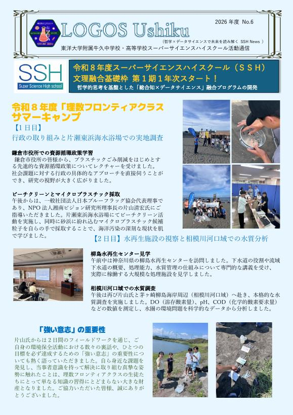
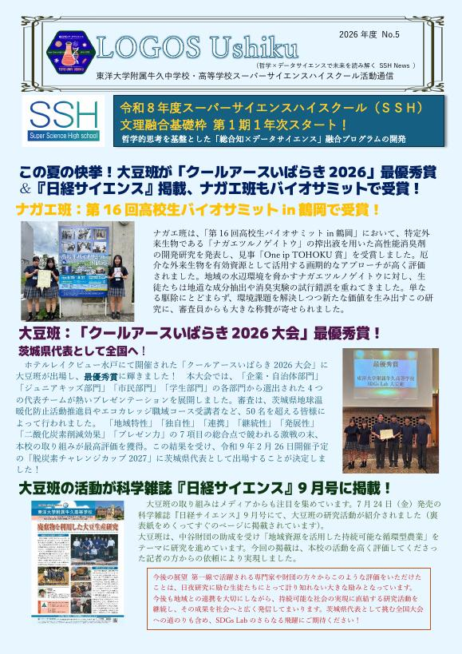
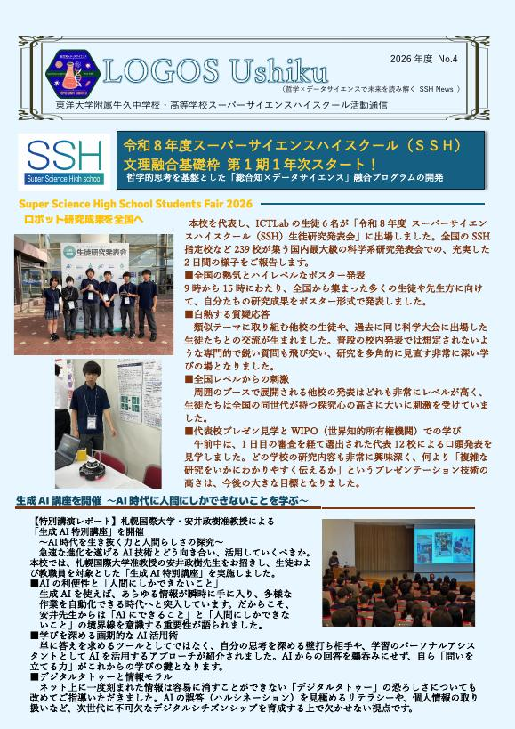
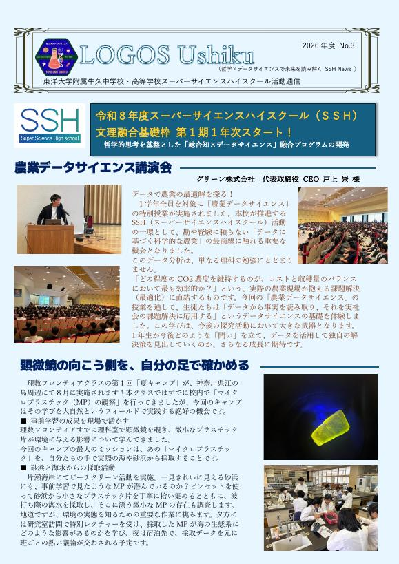
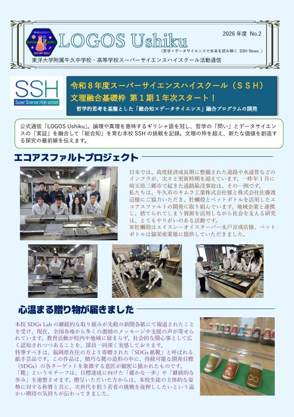
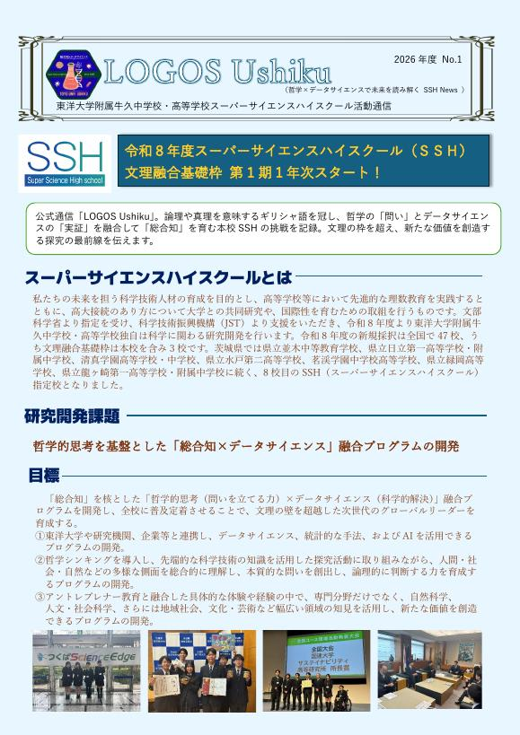

ABOUT
LOGOS ＝ 論理、真理。
公式通信「LOGOS Ushiku」。哲学の「問い」とデータサイエンスの「実証」を融合し、未来を拓く「総合知」を育む本校SSHの挑戦を記録。文理の枠を超え、新たな価値を創造する、探究の最前線を伝えます。
BACK NUMBERS
バックナンバー

2026年度 No.6理数フロンティアクラス サマーキャンプ鎌倉市役所での資源循環政策学習、ビーチクリーン、水再生センター見学、相模川河口域での水質調査。PDFを開く ↗

2026年度 No.5この夏の快挙大豆班がクールアースいばらき2026で最優秀賞、『日経サイエンス』に掲載。ナガエ班はバイオサミットで受賞。PDFを開く ↗

2026年度 No.4研究成果を全国へICT Lab が SSH生徒研究発表会に出場。生成AI特別講座 ― AI時代に人間にしかできないこと。PDFを開く ↗

2026年度 No.3農業データサイエンス1年生全員が受けた特別講演。理数フロンティアクラス 夏キャンプの予告。PDFを開く ↗

2026年度 No.2全国から届いた応援と、エコアスファルト福岡県の方から寄贈された「SDGs紙靴」。牡蠣殻とペットボトルを活用したエコアスファルトプロジェクト。PDFを開く ↗

2026年度 No.12026年度 SSHスタートスーパーサイエンスハイスクールとは。研究開発課題と目標、3つの開発プログラム。PDFを開く ↗
LATEST